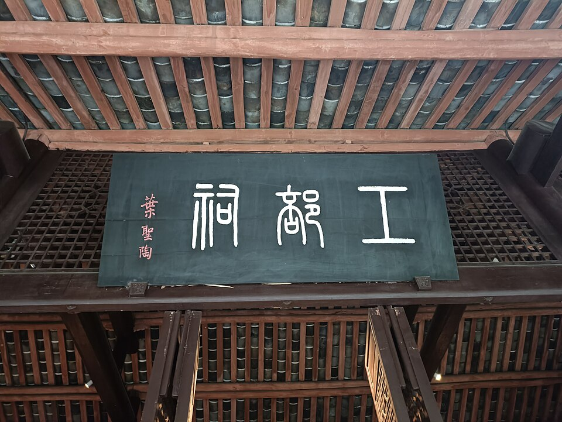
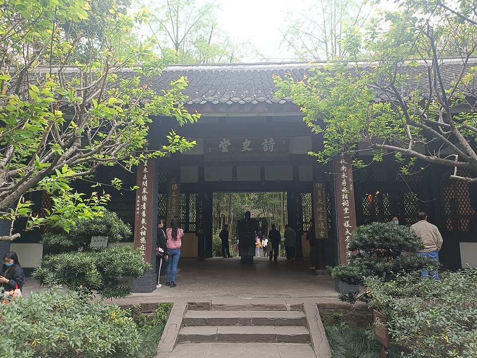

★ 兩篇以上攻略或官方都提到；單一來源 只有一篇。 大眾點評、小紅書、知乎擋爬蟲，人均多半未查到；有寫的是攜程或去哪兒的數字（2026/11 查）。點菜記得說「微辣」。
🏡 杜甫草堂
目標
① 茅屋故居 ★ ② 中軸線：工部祠、詩史堂、大廨 ★，柴門 單一來源 ③ 花徑紅牆（攜程兩篇，同一平台）到大雅堂（彩釉鑲嵌磨漆壁畫、12 尊歷代詩人雕塑）★。另外留意屋簷青苔（網友叫「瑞士卷」）單一來源。北門進、南門出 單一來源（攜程旅拍；這裡的單向走法是研判），17:00 在南門外搭計程車去玉林。
路線（15:00～17:00，步行共約 1.0 km、約 12 分）
園內地圖：官網未取得；可看 園內全景導覽圖的照片（Wikimedia Commons，2023-04），只放連結。
- 起15:00 北門：計程車在青華路 37 號下車；門口有廁所（OSM）
- 115:05 茅屋故居 ★（步行約 2 分）

瑞丽江的河水・CC BY-SA 4.0・Wikimedia Commons（2024-10，茅屋的廚房） - 215:20 盆景園（杜詩書法木刻廊） 單一來源：木刻廊在盆景園內（步行約 2 分）。OSM 上北邊有「春夜喜雨园」，杭州網寫在掛「春夜喜雨」匾的院落喝蓋碗茶 單一來源（研判是同一處） 沒有合格照片：百度圖片搜尋 →
- 315:35 少陵草堂碑亭（攜程兩篇，同一平台）：工部祠東側（步行約 2 分） 沒有合格照片：百度圖片搜尋 →
- 4·515:45 工部祠 ★、15:55 柴門 單一來源：中軸線最北端，從這裡往南走（步行各不到 1 分）

Kcx36・CC BY-SA 4.0・Wikimedia Commons（2023-04） - 616:05 詩史堂 → 大廨 ★：沿中軸線往南，兩棟相距約 30 m；東側有廁所（OSM）（步行不到 1 分）

Kcx36・CC BY-SA 4.0・Wikimedia Commons（2023-04） - 716:25 「草堂」影壁：碎瓷鑲嵌的「草堂」二字 單一來源；從這裡沿花徑（紅牆）往東（步行約 1 分，直線，實際路徑未知）

Kcx36・CC BY-SA 4.0・Wikimedia Commons（2023-04） - 816:30 大雅堂 ★：彩釉鑲嵌磨漆壁畫、12 尊歷代詩人雕塑（步行約 4 分） 沒有合格照片：百度圖片搜尋 →
- 終17:00 南門（草堂路 2 號）：門內有廁所（OSM）；約 16:50 先叫車，17:00 出門上車去玉林（車程約 30 分，玉林排 17:45，留 15 分餘裕）（步行約 1 分）

Kcx36・CC BY-SA 4.0・Wikimedia Commons（2023-04）
時刻是估算（步行用 OSRM 距離 ÷ 80 m／分，停留時間自己分配）；座標取自 OpenStreetMap。攜程旅拍（2026-10）的走法是北門 → 花徑 → 中軸線往北 → 茅屋 → 大雅堂 → 南門，會南北來回，這裡反過來單向走。唐代遺址、萬佛樓不在路線上。
時間
- 開放時間（都是攜程，官方未取得）：09:00～18:00、17:00 停止售票（或停止入園，兩說）；08:30～18:30 是 2026 中秋國慶的延時，不是冬季。15:00 進、17:00 出都在開放時間內
- 平日 15:00 後去可以避開 10:00～14:00 的人潮 單一來源
- 停留約 2 小時（攜程兩篇，同一平台）
實用
- 門票成人 ¥50 ★；實名預約，在「杜甫草堂博物館」微信公眾號提前購票 單一來源（另一篇只有摘要）；台胞證能不能刷證入園：未查到
- 導覽：攜程旅拍建議租電子講解 單一來源；2026-04 起有 AR 手持導覽機，只在南門借還 單一來源，北門進借不到。價格都未查到
- 廁所：北門旁、詩史堂・大廨東側、南門內（OSM）；寄物：未查到
吃的、文創
- 園內有茶座 ★（店名、價格未查到）；掛「春夜喜雨」匾的院落可以喝蓋碗茶 單一來源（研判在盆景園北邊）
- 不順路（北門外青華路，這條路線從南門出）：陈麻婆豆腐(旗舰店)：米其林必比登（Michelin 2026-09）；麻婆豆腐、回鍋肉、夫妻肺片；人均兩說 ¥70（攜程）／¥74（去哪兒）；青华路10号附10-12号，11:00-21:00 單一來源（偏辣，講微辣）；耀华糖果糕点铺(杜甫草堂店)：杜甫餅，人均 ¥29，青华路38号 單一來源
來源：攜程景點頁（含攜程旅拍 2026-10）、新浪旅遊 2026-06、杭州網 2026-02、攜程遊記 2023-03、搜狐 2025-12、川觀（AR 導覽）、OpenStreetMap。筆記：1211_成都市區景點攻略、1211_杜甫草堂_園內路線